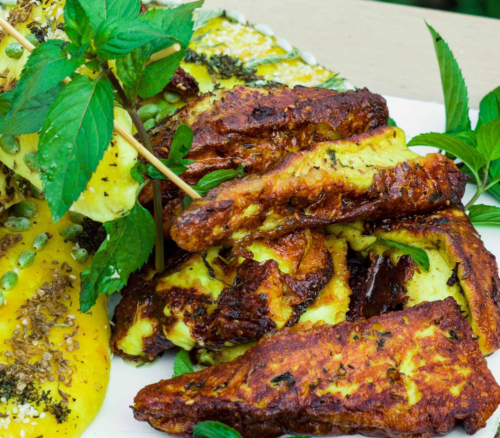
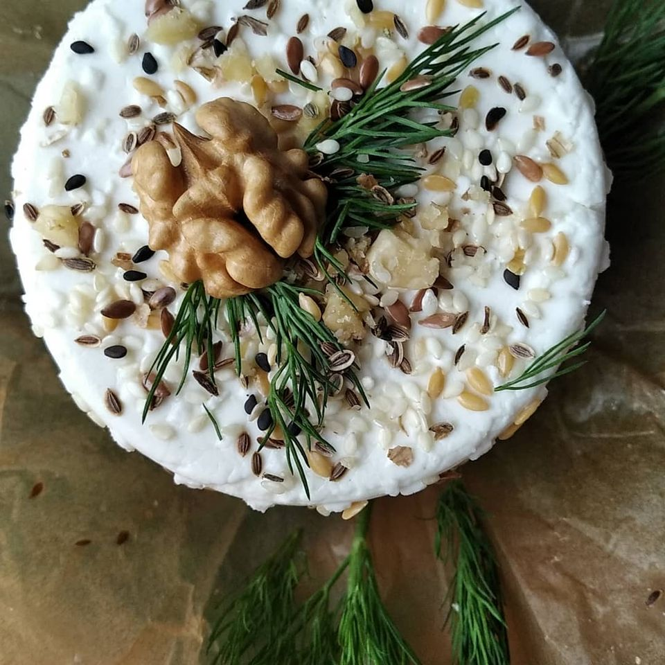
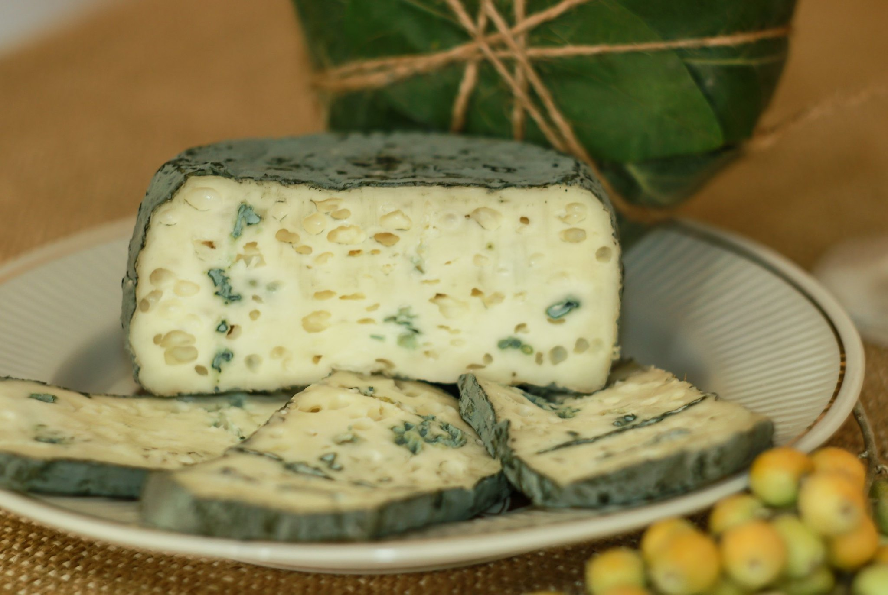
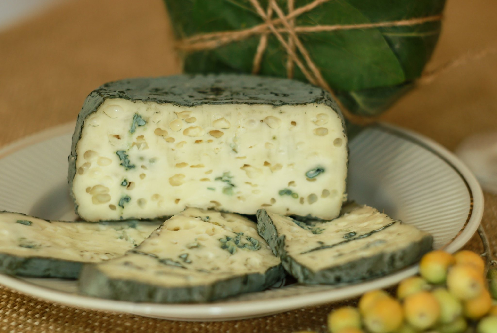

Наша продукция
Йогурт
Йогурт-продукт,известный человечеству уже сотни лет. Он улучшает работу пищеварительной системы и укрепляет иммунитет. Йогурт - это продукт окисления молока полезными бактериями.В процессе переработки молочного белка эти бактерии вырабатывают питательные вещества, необходимые для организма человека. Его могут употреблять в пищу даже те люди ,которые не переносят белок, содержащийся в свежем молоке. В результате действия молочной кислоты, образующейся в результате жизнедеятельности бактерий ,молочный белок распадается до мелких хлопьев и лучше усваивается организмом . Наш йогурт "СКИФИЯ" сделан на основе цеьного козьего молока и натуральной болгарской палочки .Регулярное употребление йогурта обеспечит ваш организм необходимым количеством питательных веществ и витаминов ,а так же обеспечит профилактику многих заболеваний !Сыр "Пектораль"
 ПЕКТОРАЛЬ - золотое украшение скифского воина,которое защищало его грудь и шею в бою... Сыр "ПЕКТОРАЛЬ" по форме и цвету напоминает древний атрибут."Пектораль"- сыр для гриля, хотя употреблять его в пищу можно, как жареном,так и в свежем виде.В его состав входят куркума,тмин,кумин,мята .Сыр "ПЕКТОРАЛЬ"- настоящее украшение любого стола.
Сыр "Сезам"
"Сезам, откройся» - хорошо знакомое с детства выражение. Но не все знают ,что сезам – это кунжут . Выражение «сезам откройся» имеет интересное происхождение . Оказывается ,что зрелые семена кунжута (сезама) при прикосновении раскрываются с громким треском. С древних времен люди по всему миру используют семена кунжута в пищу. Скифы верили, что семена сезама обладают омолаживающим эффектом .Плавленый сыр «СЕЗАМ», в состав которого входят семена кунжута, изменит ваше мнение о плавленых сырах и « откроет с громким треском» новую грань вкусовых ощущений.
Сыр "Фенхель"
 Фенхель ,а в простонародье - укроп... После зимней стужи это растение одним из первых появляется у нас на столе... "Фенхель"- это мягкий ,малосольный сыр с традиционными украинскими травами и семенами льна,кунжута и фенхеля , который всегда первым начинает наш молочный сезон. Сыр"Фенхель" идеально подойдёт к любому весеннему салату и к утреннему чаепитию. "Фенхель" - здоровое начало дня.Сыр "Шамаш"
Шамаш – солнце . С древних времен люди поклонялись солнцу. Скифские народы в своей символике изображали солнце виде изогнутой спирали . Сырный ролл « Шамаш» , в состав которого входят цельные сливки ,мясо краба и икра красной рыбы – это гармония вкуса и эстетики . «Шамаш» - солнечное начало дня !Творожный десерт "Кайса"
Нежная творожная масса в сочетании с изюмом и кайсой ,более привычное название для многих курагой, идеально подойдёт к завтраку или лёгкому ужину. Любимец детворы и не только...Сыр "Снежный жемчуг"
Снежный Жемчуг- небольшие сырные шарики , весом,примерно, 50 грамм, с благородной белой плесенью.Плотная сердцевина и нежная растекающаяся структура ближе к корочке.Пикантный ,слегка острый сырный жемчуг -отличное дополнение к бокалу вина или тонизирующей чашечке кофе. Снежный жемчуг ,несмотря на свой крошечный вес ,может обрушиться градом вкусовых ощущений и растаять, оставив после себя морозную остроту и свежесть сливочного послевкусия.Освежающий напиток "ЦитриН"
Цитрин приготовлен на основе натурального , свежевыжатого апельсинового и лимонного соков,а так же обезжиренной козьей сыворотки. Сыворотка - древнейший продукт. Это - результат переработки молока в сыр. И,несмотря на свою обежжиренность ,сыворотка продолжает оставаться целебным напитком ,она способна очищать организм от токсинов,многих видов паразитов, улучшает работу всего желудочно-кишечного тракта,повышает иммунитет. Сыворотка богата витаминами . Белок, содержащийся в ней, способен удалять чувство голода.Поэтому если есть желание убрать лишний вес - это то, что вам нужно! Свежевыжатый апельсиновый и лимонный соки дополнят Цитрин своими незаменимыми компонентами - витаминами С ,Е,В1,В2,В6; минераламии и микроэлементами, которые помогут очистить кровь и сосуды ,придать бодрости и сил. Благодаря регулярному употреблению напитка Цитрин на основе сыворотки и апельсиново- лимонного сока,можно не только избавиться от жажды ,но и привести в порядок свой организм.Сыр "ОЛИВКОВЫЙ АГАТ"
Полутвердый сорт сыра с благородной голубой плесенью. Как волокна на агате ,островки голубой плесени играют на сыре,придавая ему не только изысканный вид, но и неповторимый вкус и аромат.
 

Край старинных , древних мифов ,
где курганы живших скифов,
Край ,где старый Базавлук
разливается на луг,
Где широкие долины ,
край, где заросли маслины,
Где трава заколосилась -
наша «Джидда» зародилась.
Лишь подарит солнце свет
и появится рассвет,
Ранним утром на зоре ,
вдоль над речкой ,по горе
Ходит в поле стадо коз,
умываясь влагой рос.
Гордой поступью идут ,
в мир степей ,где их там ждут:
Свежесть утренней прохлады ,
горечь трав ,поля, левады,
Вкус маслины терпко-сладкий
и тростник от ветра шаткий.
Ждут их трели соловья ,
суетливость муравья,
Беспокойные сороки ,
распускающие склоки.
Из сверчков –оркестр прекрасный ,
хор лягушек громогласный,
Древних предков тусклый след,
тень давно минувших лет.
Там,в гармонии с природой,
наслаждаются свободой.
Наблюдая этот мир ,
мы создали в Джидде –сыр!
В нем оттенок молока
будет с вкусом тростника,
С ноткой утренней росы,
с запахом степной красы,
С ароматом конюшины,
терпкой сладостью маслины.
С вкусом таинств неоткрытых
и легенд давно забытых .
Так, вдали от суеты ,
воплотились в жизнь мечты.
Джидда – уголочек мира ,
место - зарожденья сыра!